这里记录一些学生产品经理的观察和思考。一家之言，定有谬误之处，请诸君不吝指教。
有一种说法，如果长期定投指数基金，那么一定能够挣到钱。作为一个年轻的韭菜，今天想验证一下这种说法到底有没有道理。
本文的数据基本来源于英为财经，搜索想要计算的指数，在详情界面选择日期，即可下载历史数据。使用Excel进行计算。 本人不具有金融业的教育背景和相关经历，文中有谬误之处，万望海涵。 写作本文的目的在于满足自己的好奇心和锻炼数据的处理能力，不构成投资建议。股市有风险，投资需谨慎。（虽然不懂但看起来好厉害的样子）
既然是验证“长期定投指数基金，一定能挣到钱”，那么在验证之前，需要对“长期”、“定投”、“挣到钱”进行一个定义。 在我的认识中：
长期：5到10年，甚至更长的时间段。经济周期动辄几年到十几年，如果在牛市的风口上，猪都可以飞。
定投：本文采用定期定额的投资方法，英文名字叫Dollar cost averaging，简称DCA。投资策略是在固定时间间隔投资相同金额，以达到规避风险的目的。
挣到钱：资金具有时间价值。本文会将年化收益率与无风险利率相比。我参考的无风险利率是五年期国债利率。
沪深300指数基金在A股上有几只，其中交易量较大的有300etf（510300）。我选择直接用沪深300指数进行计算，而没有直接使用300etf现成数据的原因在于： （1）300etf 的成立时间较短，从2012年成立，只有7年多的历史数据；沪深300指数在2005年起便有历史数据。 （2）指数基金与指数基本对应。分析指数和分析基金的结果基本一致。
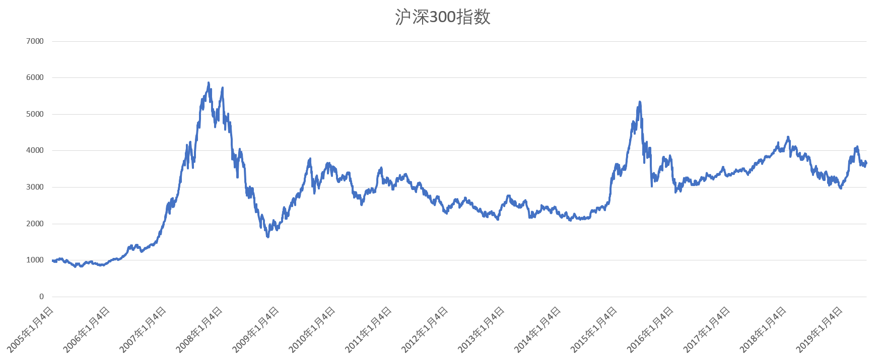
上图是沪深300指数的折线图。为方便计算，我们以月为单位，数据采样于每月17日（或之后的第一个交易日）。
沪深300指数在2007年10月17日达到山顶，收于5824.12点。之后则是一路下跌，在2008年10月17日达到谷底1833.26点，一年内缩水接近70%。 为方便计算，考虑每笔交易手续费5元，未考虑必须交易一手（100股）的限制。
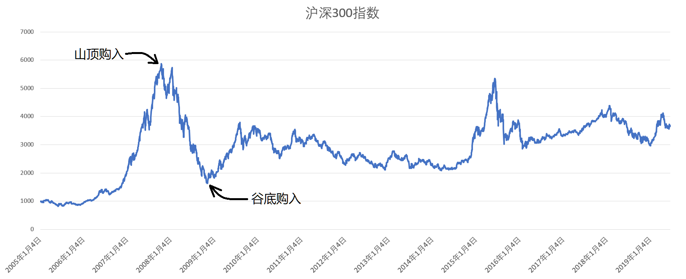
我们分别计算在山顶和谷底买入，对长期的影响。投资策略是每月17日购入相同金额的指数基金。
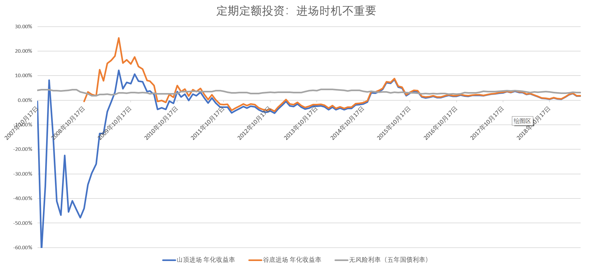
上图是不同投资时机投资年化收益率的对比。 蓝色是在2007年10月17日进场开启定投。可以看到，由于在山顶进场，购买后当月年化收益率即低于-60%。 但由于指数下降时，相同的投资金额可以购买更多的份额（来摊薄持仓成本），在20个月左右时，已经出现盈利机会。 橙色线是在2008年10月17日进场，当时是1833点，是市场的谷底。 可以看到，由于指数的快速反弹，年化收益率也一路走高，在第9个月时超过了25%。 但在之后2009年到2014年，沪深300持续缓慢下跌，年化收益率也下降至0%以下，最低时甚至在-5%左右。
把“山顶”和“谷底”的数据展示在同一张图上，我们会发现，2007年山顶进场和2008年谷底进场的年化收益率折线，在2011年（4年或3年后）即特别接近。 这引出了指数定投的第一个性质：进场时机不重要。 无论你是不幸站岗或者幸运抄底，在中长期来看，都是不重要的。
NSDQ100指数基金在A股上也有，名称是纳指100，代码是513100。这里我依然没有选择直接计算513100，原因一致：成立时间太短了。 但我们用人民币进行投资，纳斯达克指数关联美元，所以要拿到美元/人民币汇率，用每期的纳斯达克指数乘以当期汇率，经过处理后得到的指数就相当于NSDQ100指数基金的人民币价格。
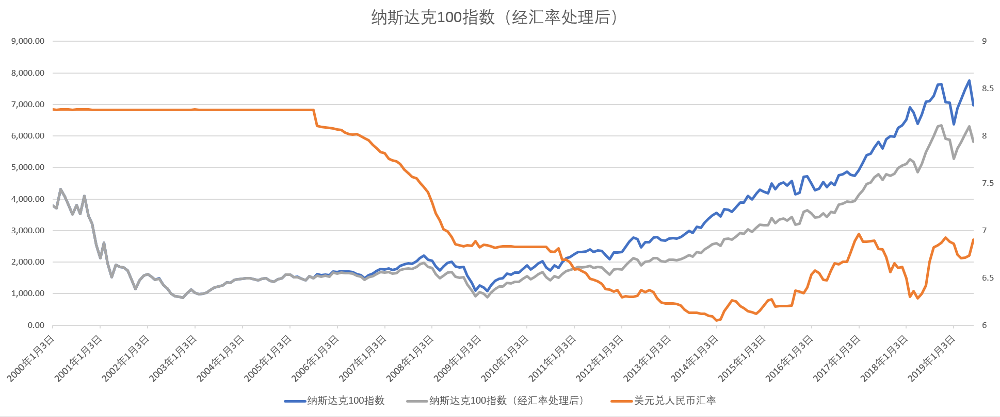
上图是纳斯达克100指数基金的折线图。为方便计算，我们以月为单位，数据采样于每月1日（或之后的第一个交易日）。
从折线图中可以看到，纳斯达克100指数在2000年即受千禧年互联网泡沫的影响，位于高点。2003年达到谷底，缓慢上升至2008年，遇到金融危机，在2009年年初达到最低点。 之后连续10年一路上行。而美元汇率在长期看是下降的，所以中国投资者用人民币来计算盈亏的话，盈利幅度是不及美元投资者的。 为方便计算，考虑每笔交易手续费5元，未考虑必须交易一手（100股）的限制。
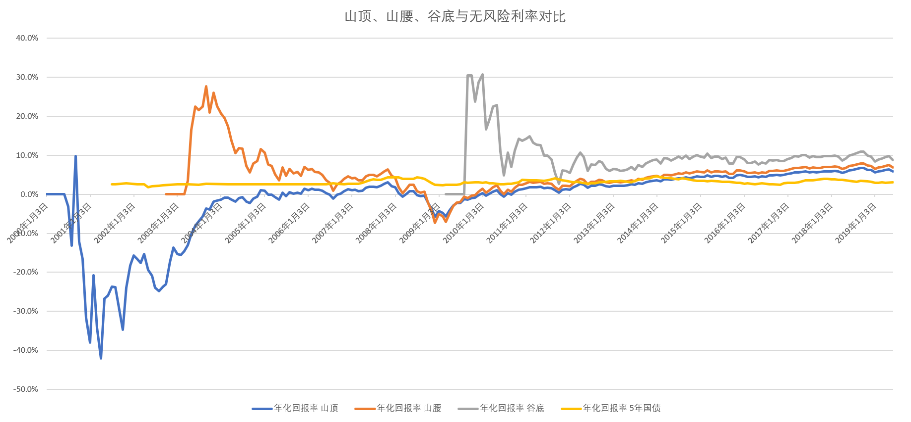
上图是不同投资时机投资年化收益率的对比。投资开始于2000年1月（山顶），2002年9月（山腰），2009年3月（谷底）。 可以看到，即使是从千禧年开始投资，刚入场就遇到千禧年互联网泡沫，在15年之后的投资回报率依然能够超过无风险收益率，截止到目前在6%左右浮动。这还是在最坏的情况下。 而如果你足够幸运，在09年抄到底，这十年的回报率可以达到150%左右，年化接近10%。
再翻回我们的沪深300。沪深300的长期投资也不能稳定做到盈利，只是在某些时段（例如2015年年中）卖出，年化才能跑赢国债。 我翻了几个国际主要市场的指数，像沪深300这样的指数还比较罕见：经济体的发展并不差啊，可是股市却没有跟着吃到肉，喝到汤。 这其中的原因我也百思不得其解，但总之，这是我总结的第二个性质：擦亮眼睛上对车是很重要的。
综上所述，即使是长期的基金定投也不能保证你挣到钱。一辆不太稳的车的回报可能不如你存货币基金，但一辆正确的车长期来看带给你6%的年化收益是很轻松的。 不要考虑上车时机，坐上正确的车是最重要的。下面来欣赏全球几个主要股指的长期走势。
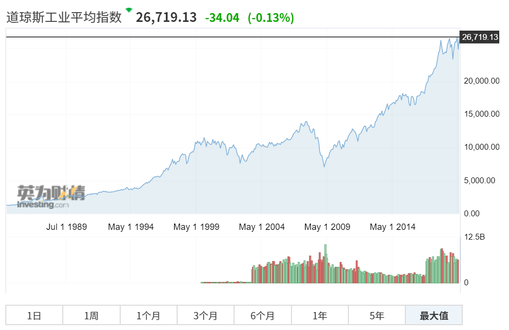 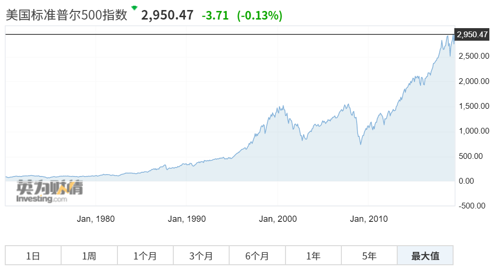
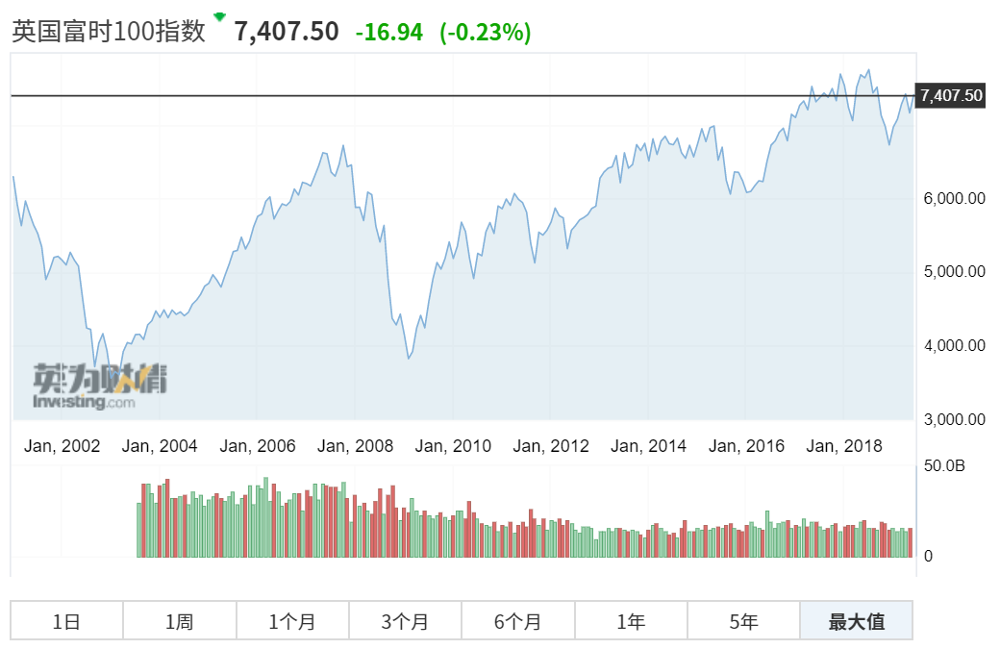 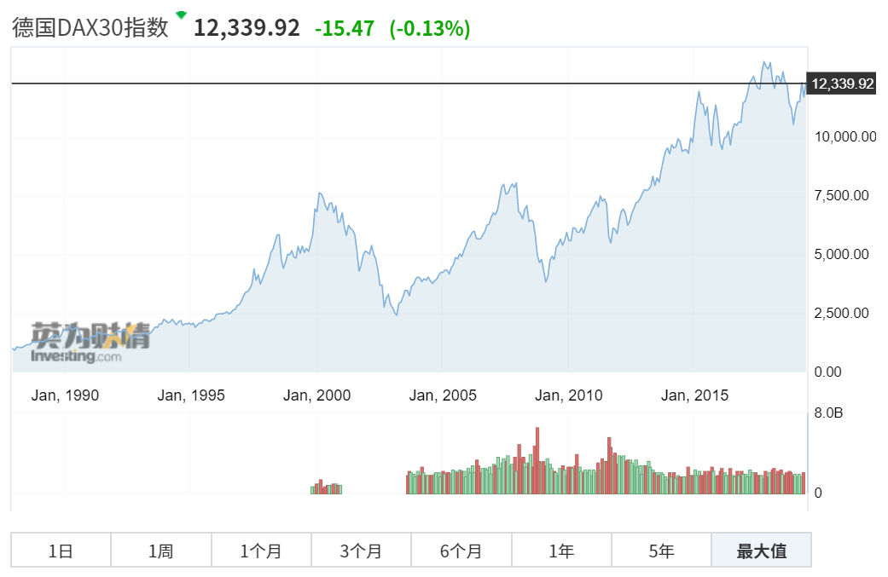
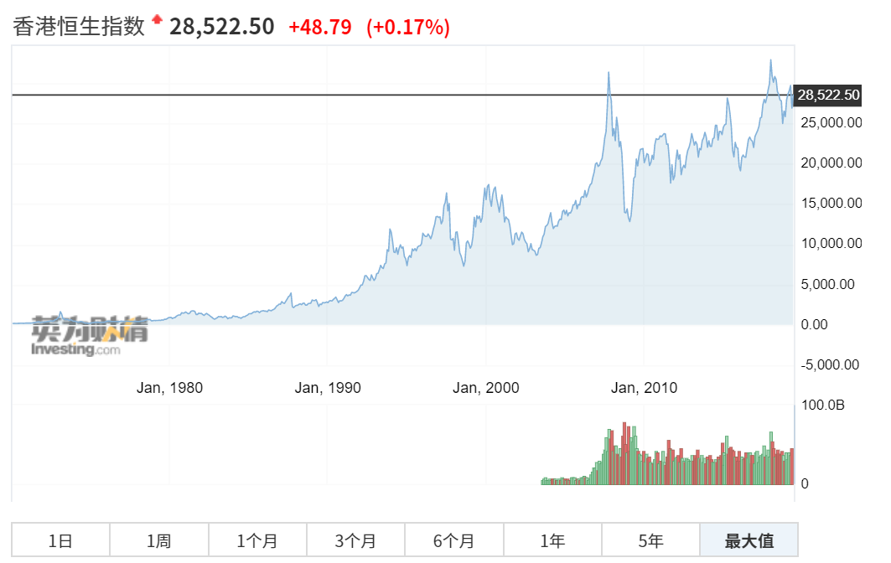 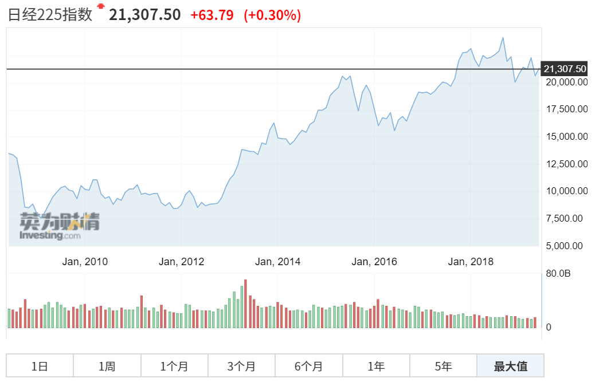
最后来回顾一下我们的沪深300。
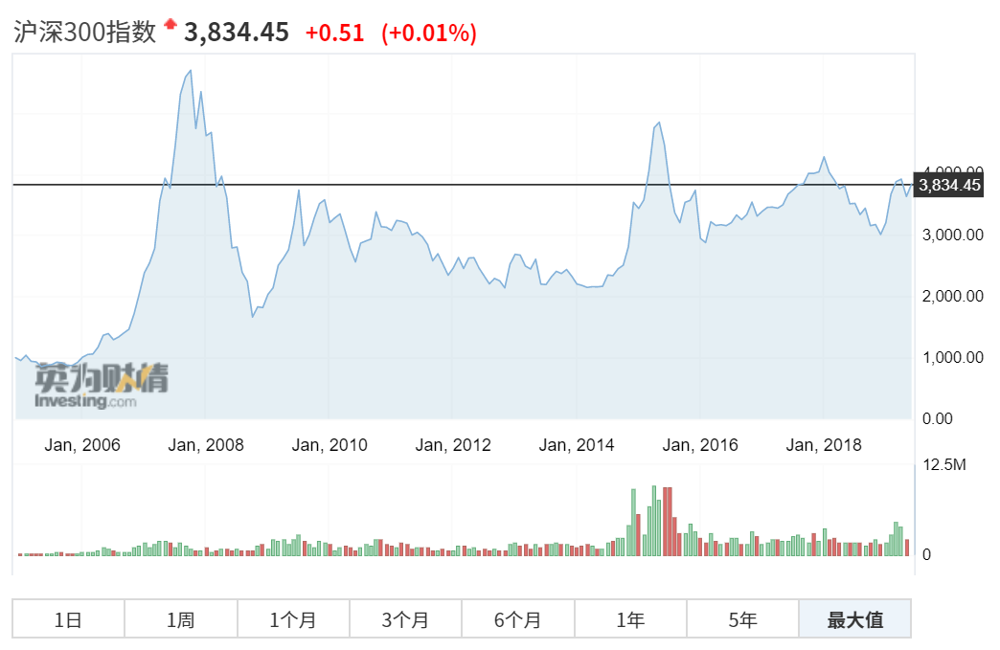
上文都是按照买“指数”来计算的。在实际操作中还会遇到一个问题，就是中国股市有一个1手=100股，必须成手交易的限制。 之前的计算是，假如第一期一手400元，我每期定投1000元，那么第一期买到的就是2.5手。然而实际操作中，是不允许购买0.5手的。 我们可以购买整手，将剩余的钱放入下一期的基金定投中。不会对结果造成较大的偏差。